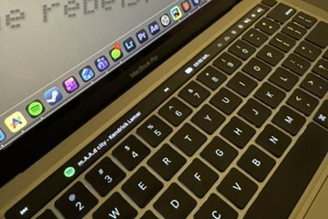

GitHub Profile Analyzer
A command-line tool that reads a developer's public repositories from the GitHub API and reports metrics such as stargazer counts and language frequency.
First-year Bachelor of Computing (Honours) student at Queen's University. I write Python and Java for coursework and build small tools with APIs and scripting on the side.
Spotify
Checking Spotify...
I am interested in software engineering, systems, data structures and algorithms, web development, and games. Outside of coursework I am into photography and tech products.
A command-line tool that reads a developer's public repositories from the GitHub API and reports metrics such as stargazer counts and language frequency.
The widget at the top of this page. A small serverless API on Vercel talks to the Spotify Web API, so my credentials never reach the browser. The page asks it for my current track every 10 seconds, and when nothing is playing it shows the last track I played.

A custom Touch Bar layout for MTMR. It shows the current Spotify track with play/pause and skip controls, a battery readout that parses pmset output, and swipe gestures. It is based on community presets and extended with my own AppleScript and shell code.